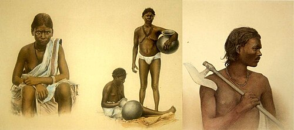

The origin of the Ho people is deeply rooted in mythology and oral tradition, which closely resembles the creation stories of the Munda community.

According to the Ho creation myth, Ate Baram, the Earth God, and Singbonga, the Sun God, together created the earth along with plants and animals. After completing creation, they formed a boy and a girl and placed them inside a cave to begin human life.
In time, Singbonga taught the couple how to prepare Ili, a traditional rice beer also known as Handia. After consuming this drink, human desires were awakened, and the couple gave birth to twelve sons and twelve daughters. As they grew older, these sons and daughters formed pairs and established their own families, leading to the expansion of human society.
Later, Singbonga arranged a grand feast and invited all the descendants. A variety of meats were prepared for the occasion. During the feast, the first and second couples showed a preference for ox and buffalo meat. These two couples are traditionally regarded as the ancestors of the Ho people.
This myth not only explains the origin of the Ho community but also reflects their close relationship with nature, food habits, and social organization.